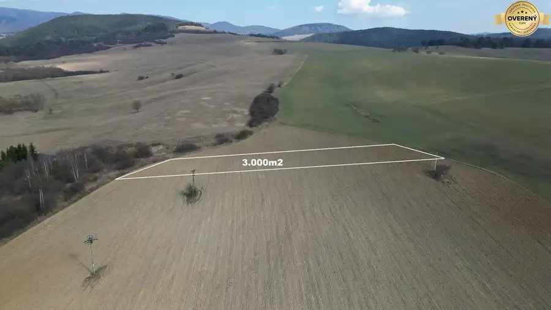
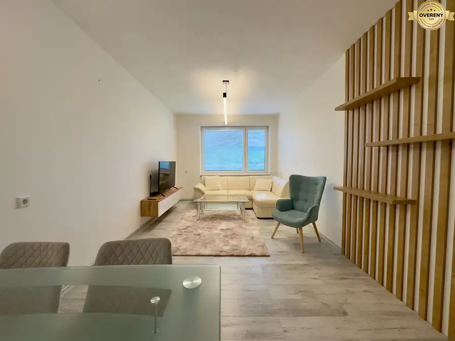
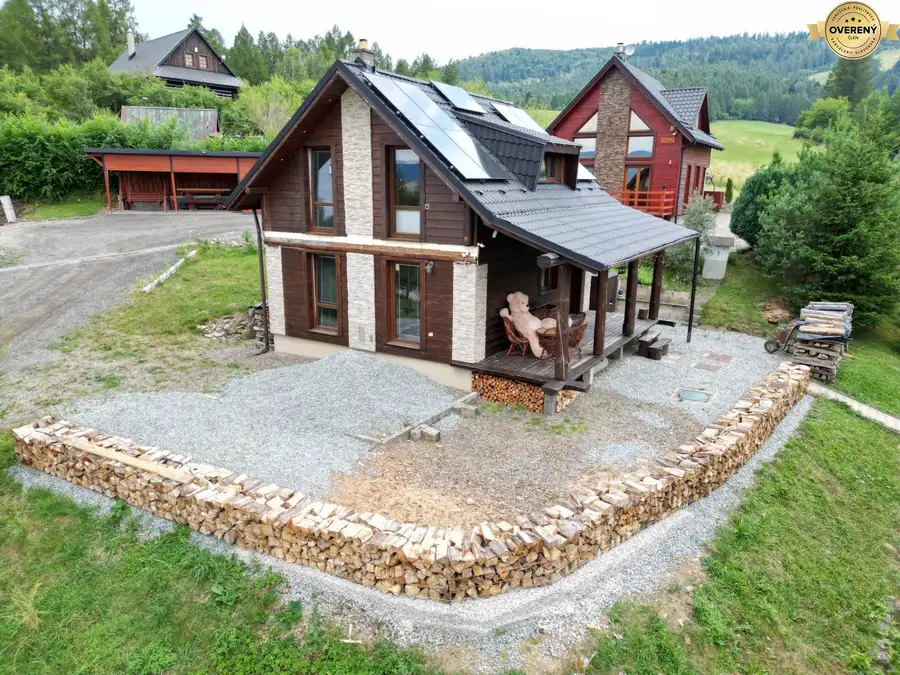

Na predaj investičný pozemok 582m2, obec Lemešany, okres Prešov
Lemešany
- Plocha582 m²
- Vlastníctvoosobné
O nehnuteľnosti
EXKLUZÍVNE ponúkame na predaj investičný pozemok v obci Lemešany, okres Prešov.
Technické informácie a špecifikácia:
Pozemok:
– výmera 582m2,
– šírka pozemku 22m, dlžka pozemku 27m,
– mierny sklon pozemku,
– aktuálne ešte extravilán obce,
– slnečný pozemok,
– tichá lokalita,
– prístup je naplánovaný priamo z komunikácie vo vlastníctve obce Lemešany,
– hranice terénu sú na fotkách zobrazené orientačne, v prípade záujmu vieme pozemok vytýčiť geodetom.
.:CENA za pozemok 582m2 je 40.158,-Eur:.
Výhody:
Pozemok sa nachádza v pripravovanej novovznikajúcej lokalite ,,Povrasky” kde už prešli jednoduché pozemkové úpravy, rozdelenie pozemkov a vznik cestných komunikácií. Výborná dostupnosť na dialnicu, ktorá je v blízkosti pozemku cca 1km, dostupnosť mesta Prešov 14km/10min, mesto Košice 16km/10min.
Zaujímavá investícia do perspektívneho pozemku medzi mestami Prešov a Košice.
.:V cene je samozrejme kompletný právny a realitný servis:.
.:Spravujeme citlivé údaje klientov, neodpovedáme na anonymné emaily a sms:.
.:Martin Vaľko RSc. – v realitách od roku 2009:.
.:Aj Vašu nehnuteľnosť môžem bezpečne a diskrétne predať alebo prenajať:.
– certifikovaný Realitný poradca od roku 2011
– akreditovaný Manažér správy budov od roku 2017
– člen Združenia realitných kancelárií Slovenska /ZRKS/
– konateľ VAĽKO REALITY, spol. s r. o.
Martin Vaľko RSc., konateľ VAĽKO REALITY, spol. s r.o. email:
Asistentka,
Parametre
| Rozloha pozemku | 582 m² |
|---|---|
| Vlastníctvo | osobné |
| Dátum zverejnenia | 21. 5. 2025 |
Kde to je
Mohlo by Vás zaujímať

Záhrady6 40 000 €Investičný pozemok 3.000m2 Lipany, okres Sabinov Lipany 3000 m² Technické informácie a špecifikácia: Pozemok: – výmera min. 3000m2 + možná dohoda na výmere pozemku, min. však 3000m2, – šírka pozemku cca 21m, dlzka…
Byt10 155 000 €NA PREDAJ 2-izbový tehlový byt Lipany, okres Sabinov Lipany 2-izbový50 m² Technické informácie a špecifikácia: BYT: ➡️ podlahová výmera 50,54m2, ➡️ bez balkóna, ➡️ 1. poschodie /pod bytom je byt, stredový byt/, ➡️…
Chaty a chalupy10 159 000 €Rekreačná chata Dubovica-Žliabky, okres Sabinov Dubovica 3-izbový51 m² Technické informácie a špecifikácia: ➡️ murovaná stavba, murivo Solbet o hrúbke 25cm, ➡️ zateplenie fasáda 8cm polystyrén + drevený obklad, ➡️…